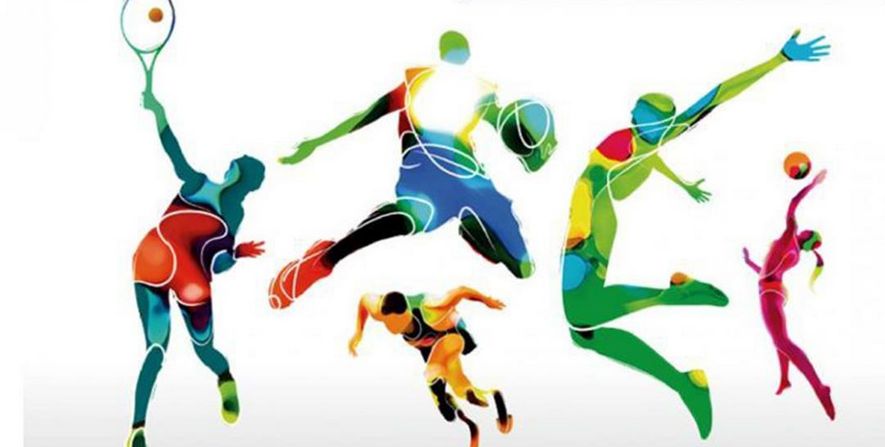

Dominio de los juegos colectivos en las Olimpiadas

Los juegos colectivos, también conocidos como deportes de equipo, juegan un papel crucial en la diversidad y riqueza del programa olímpico, ofreciendo oportunidades para la cooperación, la estrategia y las habilidades tácticas.
Desde los inicios hasta la actualidad de las Olimpiadas, se han jugado en equipo alrededor de 38 deportes, con varias modalidades. Muchos de estos deportes ya no se juegan en el programa actual, pero un gran número de ellos sí se mantienen.
La siguiente figura muestra la evolución de los deportes colectivos en los Juegos Olímpicos, en la que se aprecia el aumento de estos a lo largo de los años.
En los Juegos Olímpicos, los países que desean demostrar una buena habilidad en los deportes de equipo necesitan contar con grandes habilidades individuales. Los países que logran destacarse en estos deportes suelen ser buenos en el ámbito deportivo en general.
Estados Unidos se posiciona como el país con mayor cantidad de medallas en deportes de equipo en los Juegos Olímpicos, lo que demuestra su dominio en ambas modalidades: individual y colectiva. Esta nación, sin embargo, no solo destaca por la cantidad de medallas,
sino también por la diferencia significativa que mantiene con su segundo rival, lo que evidencia su superioridad en el ámbito del deporte olímpico (ver la tabla siguiente).
País
Cantidad de medallas
A continuación, encontrarás una lista de deportes colectivos que han formado parte de los Juegos Olímpicos. Al hacer clic en cada botón, podrás acceder a un análisis breve sobre su dominio a lo largo de los años.
Atletismo▼
En el atletismo, el espacio para el desarrollo en equipo es a través de los relevos principalmente. En este deporte, Estados Unidos se ubica como el país con más medallas, con una gran diferencia hacia los demás, con un total de 65 medallas.
Badminton▼
El bádminton hizo su debut olímpico como deporte de demostración en los Juegos de 1972, en Múnich, y fue incluido como deporte de exhibición en los Juegos Olímpicos de Seúl 1988. Luego, se convirtió oficialmente en parte del programa de competición olímpica en los Juegos de 1992 en Barcelona con cuatro categorías de medallas: individual masculino y femenino, y dobles masculino y femenino.
Los dobles masculinos están dominados por Corea con un total de 7 medallas, seguida muy de cerca por Indonesia con 6 medallas y China con 4 medallas.
En los dobles femeninos, China deja un gran margen entre los demás países, pues acumula un total de 11 medallas. No consiguió medalla en los Juegos de Río 2016, pero desde los inicios del bádminton en los Juegos Olímpicos ha tenido un buen desempeño. Desde 1996 hasta 2008, logró obtener dos medallas en cada edición, incluyendo siempre el oro. En el 2000, logró posicionarse en las posiciones más altas, ganando el oro, la plata y el bronce. En 2012, no obtuvo dos medallas como en las ocasiones pasadas, pero sí se llevó el oro.
Un rival que ha tenido China desde los inicios ha sido Corea, y ha estado a la altura. Corea, en 1992, al inicio de este deporte, logró llevarse dos medallas. Las medallas quedaron repartidas entre estos dos países hasta 2012, cuando Corea no obtuvo medalla, pero a diferencia de China, sí logró una medalla en 2016.
Los dobles mixtos se añadieron a la disciplina cuatro años después, en Atlanta. La última modalidad que se introdujo fue los dobles mixtos, y en esta ocasión, China nos sigue dando éxitos, invicta desde el inicio. Este deporte es dominado en gran medida por los países de Asia.
A continuación, se aprecian las distribuciones de la cantidad de países por continentes que han tenido participación, así como de aquellos que han obtenido medallas.
Baloncesto▼
El baloncesto es un deporte que pone a prueba la resistencia de los jugadores, así como su precisión y habilidades con la pelota. Por encima de todo, destaca la coordinación en equipo para ejecutar las jugadas y alcanzar la victoria.
El baloncesto masculino, con su dinamismo y espectáculo, conquistó los Juegos Olímpicos en 1936, mientras que el baloncesto femenino tuvo que esperar hasta Montreal 1976 para debutar en el escenario olímpico.
Estados Unidos ha logrado obtener un lugar en el podio en cada evento, ganando una medalla. Desde 1996 hasta los últimos Juegos Olímpicos (2020), ha ganado la medalla de oro. La URSS también obtuvo una medalla en cada edición en la que participó.
Baloncesto 3x3▼
El baloncesto 3x3 es un deporte que tiene sus raíces en el baloncesto callejero. Se juega en la mitad de una pista de baloncesto, donde compiten dos equipos de tres jugadores. Ambos equipos atacan y defienden en el mismo aro, dependiendo de quién tenga la posesión del balón.
En 2020, el baloncesto 3x3 fue incluido en el programa olímpico, tanto en la modalidad femenina como masculina. Las medallas masculinas fueron para Letonia, el Comité Olímpico Ruso y Serbia. En cambio, el oro, la plata y el bronce en la categoría femenina fueron para los Estados Unidos de América, el Comité Olímpico Ruso y la República Popular de China.
Balonmano▼
El balonmano es otro deporte que desarrolla las habilidades de ataque y defensa en equipo. La Unión Soviética, Hungría, Yugoslavia, Rumania, Dinamarca, España y Suecia dominaron la escena durante las décadas de los 70 y 80, con Rumania y la Unión Soviética como máximos ganadores.
La década de los 90 trajo consigo nuevos contendientes, como Francia, que se convirtió en la nación con más medallas en este deporte. Egipto y Brasil, aunque con una participación activa, aún no han logrado subir al podio. Suecia, por su parte, continuó su participación, comenzando a cosechar victorias a partir de esta década.
El balonmano femenino, introducido en las siguientes ediciones, vio a la Unión Soviética como la campeona dominante durante la década de los 80. La República de Corea, con su primera participación en 1984, logró 6 medallas, mientras que Noruega se posicionó como la nación con más medallas en total, acumulando 7 medallas12.
Béisbol▼
El béisbol es tradicionalmente jugado por hombres, mientras que el sóftbol es la versión femenina del deporte. El béisbol se practica por primera vez en Inglaterra, pero se considera el pasatiempo nacional de Estados Unidos.
Se incorporó como parte del programa olímpico en los Juegos Olímpicos de Barcelona 1992. En su debut, Cuba ganó la medalla de oro, y obtuvo resultados notables hasta 2008.
Estados Unidos no se queda atrás, logrando ser campeón en cuatro ocasiones junto a Japón, que se coronó campeón en los Juegos Olímpicos de Tokio 2020.
Ciclismo en pista▼
El ciclismo en pista, disciplina olímpica de larga tradición, ha estado presente en todas las ediciones de los Juegos Olímpicos modernos, con la excepción de Estocolmo 1912.
Con una gran acumulacion de medallas en este deporte se encuentra Reino Unido, Italia y Francia.
En el ano de 1988 en Seul, se agregan las competiciones de las mujeres donde se encuentran a la par la cantidad de veces que ganaron los paises de Reino Unido, Estados Unidos y Alemania.
Ciclismo en ruta▼
El ciclismo en ruta es una de las pruebas olímpicas originales, ya que figuró en el programa competitivo de la primera Olimpiada moderna, celebrada en 1896 en Atenas. En este deporte, la modalidad de equipo es la contrarreloj masculina, que tuvo presencia activa desde 1912 hasta 1992.
Durante este periodo, Suecia se distinguió notablemente. Desde 1912 hasta 1932, el país ganó medallas de manera consecutiva y posteriormente continuó obteniendo más reconocimientos en esta disciplina.
Doma ecuestre▼
La doma ecuestre es la forma de entrenamiento ecuestre más avanzada, en la que el caballo y el jinete realizan una serie de movimientos artísticos al ritmo de la música. Este deporte forma parte del programa de las Olimpiadas desde 1928. Alemania ha sido protagonista en este deporte, ganando en cada Olimpiada y quedando en primer lugar desde 1964 hasta 2008. Los Países Bajos le siguen con la mayor cantidad de medallas, pero nunca han quedado en primer lugar. La República Federal de Alemania participó en cuatro ocasiones y siempre logró llevarse una medalla.
Esgrima▼
Otro deporte colectivo a analizar, el cual tiene una rica historia dentro de los Juegos Olímpicos, habiendo hecho su debut en los primeros Juegos Olímpicos modernos celebrados en Atenas en 1896, es la esgrima. Italia es el país con más medallas en este deporte, con un total de 39. Le siguen de cerca Francia y Hungría, con 35 y 31 medallas respectivamente. Hay 12 eventos de esgrima con tres tipos diferentes de armas: florete, espada y sable.
Eventos ecuestres▼
Los eventos ecuestres en los Juegos Olímpicos son una de las disciplinas más elegantes y emocionantes. Estos eventos combinan la habilidad del jinete y la destreza del caballo. Quienes más han demostrado esta destreza han sido los estadounidenses y los británicos.
Futbol▼
El fútbol es uno de los deportes más populares, introducido por primera vez en los Juegos de París en 1900 para los hombres y en Atlanta 1996 para las mujeres. La mayoría de las medallas las han ganado los americanos, con Brasil en primer lugar con la mayor cantidad de medallas, seguido por los Estados Unidos. Más del 75% de los logros de Brasil son en el fútbol masculino, y le acompañan Dinamarca y los Países Bajos con una pequeña diferencia. En las competencias femeninas, quienes toman el protagonismo son los Estados Unidos junto a Alemania.
Gimnasia artistica▼
La gimnasia artística está compuesta por varias competiciones individuales en diferentes aparatos, así como de una competición por equipos en las que se utilizan todos los aparatos específicos de cada género.
En este deporte existe una gran rivalidad entre los chinos y los estadounidense. En las competencias femeninas los estadounidenses se destacan muy bien, sin embargo los chinos so mejores en las competencias masculinas.
Gimnasia ritmica▼
La gimnasia rítmica puede explicarse sencillamente como la expresión a través del movimiento. Combina elementos de la danza tradicional y de la gimnasia artística junto a la utilización de cuatro aparatos: cinta, aro, pelota y mazas.
Este deporte es dominado muy bien por los europeos, con la mayor cantidad de medallas en manos de los rusos. Principalmente los americanos no obtienen medallas en este deporte.
Hockey▼
El hockey hizo su primera aparición en los Juegos Olímpicos en 1908 en Londres, antes de convertirse en una disciplina permanente del programa olímpico a partir de los Juegos de 1928. La variedad femenina del hockey se introdujo en los Juegos Olímpicos de Moscú 1980. Los Países Bajos han acumulado un total de 18 medallas, una diferencia de 7 medallas respecto a la India. La India se colocó en primer lugar con medalla de oro de manera consecutiva desde 1932 hasta 1956.
Lacrosse▼
El lacrosse es uno de los cinco deportes propuestos para su posible inclusión en los Juegos Olímpicos de 2028. Este deporte tuvo participación previa en los Juegos Olímpicos en 1904 y 1908, siendo Canadá el principal protagonista durante esas ediciones.
Natacion▼
La natación ha estado presente en todos los Juegos Olímpicos de la era moderna. Los eventos de estilo libre eran los únicos que se disputaban en los Juegos de 1896 y, posteriormente, se fueron agregando más modalidades. Entre ellas se encuentran los relevos, competencias que se realizan en equipo y donde se muestra la gran habilidad de los estadounidenses. Ellos dejan una gran diferencia respecto a los demás países. En 1980, cuando Estados Unidos no se presentó a los Juegos Olímpicos, el oro lo ganó Australia, que es el segundo país con más medallas.
Natacion Sincronizada▼
La natación sincronizada se desarrolla por la combinación de acrobacias acuáticas con música. Se convirtió en disciplina olímpica en los Juegos Olímpicos de Los Ángeles 1984. Rusia tiene un total de 10 medallas y Japón le sigue de cerca con 9. Rusia comenzó a participar en 1996 en la categoría de equipos femeninos, en la cual no salió campeona, pero a partir de las siguientes ediciones obtuvo siempre medallas de oro, al igual que en la modalidad de dobles femeninos, donde no ha perdido el primer lugar desde que comenzó en el 2000.
Pentatlon moderno▼
El pentatlón moderno fue introducido en los Juegos Olímpicos en 1912 y está diseñado para poner a prueba las habilidades físicas y mentales de los atletas. No solo se enfoca en su rendimiento personal, sino también en cómo sus resultados contribuyen al éxito del equipo. El equipo que ha tenido mayor éxito ha sido Hungría, ya que siempre ha obtenido medallas, y la Unión Soviética también ha logrado obtener medallas en este deporte.
Piragüismo en eslalon▼
El piragüismo en eslalon debutó en los Juegos Olímpicos de Múnich 1972 y, desde entonces, se ha establecido como una disciplina olímpica permanente, oficialmente reconocida en los Juegos de Barcelona 1992. A lo largo de su historia olímpica, el 90% de todas las medallas han sido ganadas por atletas europeos. Eslovaquia destaca como el país con más medallas en esta disciplina, seguido de cerca por la República Checa y Francia, quienes han jugado roles significativos en los éxitos del piragüismo en eslalon a nivel olímpico.
Piragüismo en sprint▼
En cuanto al piragüismo en esprint, la tendencia de obtener medallas también favorece principalmente a los países europeos. Alemania lidera con un total de 49 medallas, mientras que Hungría sigue en segundo lugar, destacándose especialmente en este deporte.
Remo▼
El remo consiste en la propulsión de una embarcación mediante remos conectados a la misma por un punto de giro. Este deporte ha sido un pilar en los Juegos Olímpicos, pues ha estado presente en todas las ediciones excepto en la primera. Aunque solo había ediciones masculinas hasta 1976. En este deporte, gran parte de las medallas son para Alemania, debido a su gran dominio. De igual manera, la Unión Soviética no participaba en tantas modalidades diferentes, al menos no en el mismo año, y cada vez que participaba obtenía oro hasta su desintegración. Sin embargo, después de la desintegración, Rusia no ha ganado muchas medallas.
Rugby▼
En los Juegos Olímpicos de París 1900, se introdujo por primera vez una competición masculina de rugby union, la cual se repitió en las ediciones de Londres 1908, Amberes 1920 y París 1924. Durante estas ocasiones, los equipos de Estados Unidos, Francia y Rumanía lograron medallas. No obstante, estos países no pudieron repetir su éxito cuando el rugby fue reintroducido en los Juegos Olímpicos en Río de Janeiro 2016.
Saltos▼
En este deporte, la parte para desarrollar el trabajo en equipo son los saltos sincronizados. Estos no estuvieron desde el principio, sino que se agregaron en el año 2000. La República Popular China tiene un total de 16 medallas, seguida por Rusia. En los eventos femeninos, China se presenta como el país dominante y representa el doble de los premios de Rusia. En los eventos masculinos, Rusia también se destaca
Softbol▼
El sóftbol es un deporte muy relacionado con el béisbol, solo que se juega principalmente por mujeres. El sóftbol se introdujo en los Juegos Olímpicos de Atlanta 1996, donde Estados Unidos consiguió oro desde entonces hasta el 2004, y en los demás años obtuvo plata.
Tenis▼
El tenis regresó a los Juegos Olímpicos en 1988 como un deporte definitivo. Estados Unidos se sitúa en la cima de los eventos dobles masculinos, con Croacia y España también destacándose. La República Checa, en los eventos dobles femeninos, ha mantenido su presencia en el podio desde 1996, logrando el oro en los Juegos Olímpicos de Tokio 2020. Estados Unidos y España también han conseguido medallas en esta categoría.
Tenis de mesa▼
El tenis de mesa es una derivación del tenis, originado en Inglaterra, y se introdujo a los Juegos Olímpicos en Seúl, 1988. A lo largo de los juegos en los que ha estado presente este deporte, China ha logrado acumular la mayor cantidad de medallas. Después se encuentra Corea, con la mitad de estas respecto a China. En la modalidad femenina, China se destaca grandemente y Corea es el segundo país con más medallas, representando la mitad de las de China. En las medallas masculinas, se comporta igual, con China al frente del marcador.
Tiro con arco▼
El tiro con arco se jugó en las Olimpiadas de París en 1900 y las competiciones en equipo se introdujeron en 1988. La República de Corea se mantiene como el máximo ganador de medallas, seguida por los Estados Unidos.
Vela▼
En el deporte de la navegación o vela, las distintas categorías de competición han experimentado una constante evolución. Este deporte ha sido parte de los Juegos Olímpicos desde 1900. En esta disciplina, Gran Bretaña es el país que ha obtenido más medallas en los diferentes eventos, seguido por Francia y Noruega.
Voleibol▼
Desde su debut en los Juegos Olímpicos de Tokio 1964, el voleibol ha capturado la atención de aficionados y atletas por igual. Brasil, grande en el voleibol, ha estado presente en cada edición de los Juegos Olímpicos desde su debut y ha logrado subir al podio en 7 ocasiones. Italia y Estados Unidos, dos potencias del deporte, también han tenido una participación destacada, con 7 y 6 medallas respectivamente.
La Unión Soviética se sumó a la escena olímpica del voleibol en 1968, marcando su dominio con medallas en cada edición hasta su disolución. Rusia, su sucesora, tomó el relevo con una participación activa a partir de 1996, logrando medallas desde 2000 hasta 2012. En un giro inesperado, los atletas rusos, debido a un escándalo de dopaje en 2020, no pudieron competir bajo la bandera de su país. Sin embargo, bajo las siglas de ROC (Comité Olímpico Ruso), lograron destacarse y obtener medallas en el voleibol.
El voleibol femenino ha presentado un panorama distinto en los Juegos Olímpicos, con una dinámica de resultados más diversa. Estados Unidos y la República de Corea lideran en cuanto a participación, con Estados Unidos obteniendo 6 medallas. Sin embargo, la República de Corea solo ha conseguido una medalla de bronce en 1976. La Unión Soviética, desde su participación inicial en el voleibol femenino, ha logrado obtener medallas en cada edición. Cuba, por su parte, ha destacado en este deporte, alcanzando medallas consecutivas desde 1992 hasta 2004.
Voleibol de playa▼
En 1996, el voleibol de playa fue reconocido como una disciplina olímpica y se incorporó a los Juegos Olímpicos de Atlanta. En cuanto a las posiciones y enfrentamientos, Australia, Estados Unidos, Alemania y Brasil han sido protagonistas tanto en los eventos femeninos como en los masculinos desde los inicios del voleibol de playa.
Waterpolo▼
El waterpolo es uno de los deportes de equipo más antiguos en los Juegos Olímpicos modernos, ya que fue incorporado al programa al mismo tiempo que el rugby, en 1900. Hungría y los Estados Unidos están arriba en el marcador con más medallas. Hungría ha obtenido casi todas sus medallas en las competencias masculinas, mientras que Estados Unidos logró un mejor desempeño en las competencias femeninas, pero también ha obtenido buenas medallas en las masculinas. Reino Unido tuvo una etapa gloriosa en el waterpolo masculino, obteniendo oro desde 1908 hasta 1920.